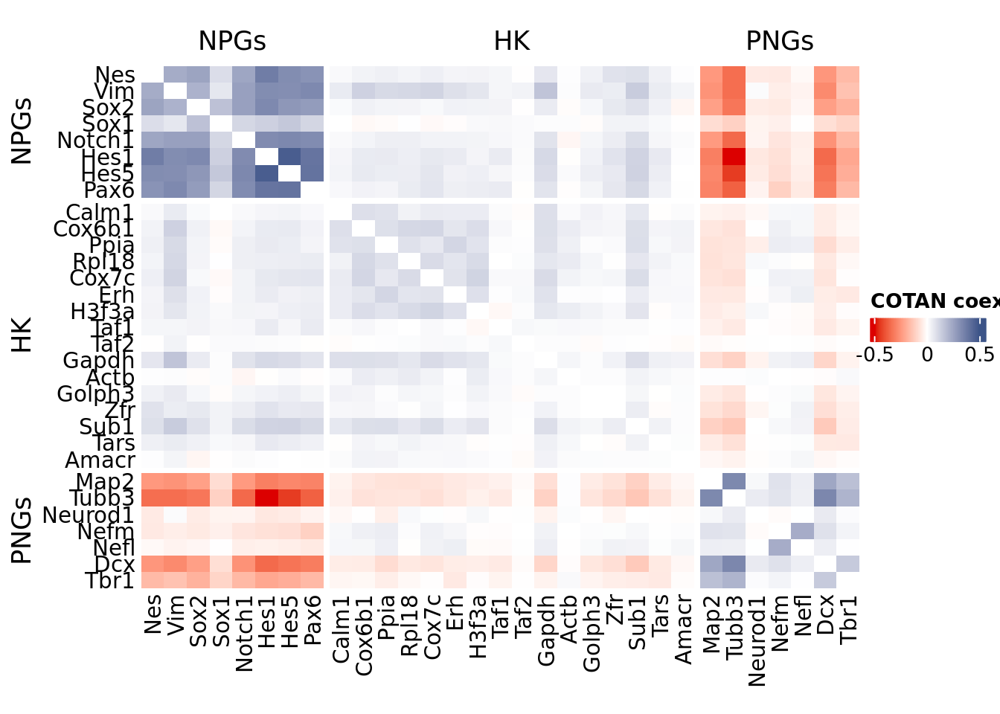

library(COTAN)
library(ComplexHeatmap)
library(circlize)Gene Correlation Analysis E15.0 Mouse Brain
To compare the ability of COTAN to asses the real correlation between genes we define some pools of genes:
- Constitutive genes
- Neural progenitor genes
- Pan neuronal genes
- Some layer marker genes
genesList <- list(
"NPGs"=
c("Nes", "Vim", "Sox2", "Sox1", "Notch1", "Hes1", "Hes5", "Pax6"),
"PNGs"=
c("Map2", "Tubb3", "Neurod1", "Nefm", "Nefl", "Dcx", "Tbr1"),
"hk"=
c("Calm1", "Cox6b1", "Ppia", "Rpl18", "Cox7c", "Erh", "H3f3a",
"Taf1", "Taf2", "Gapdh", "Actb", "Golph3", "Zfr", "Sub1",
"Tars", "Amacr"),
"layers" =
c("Reln","Lhx5","Cux1","Satb2","Tle1","Mef2c","Rorb","Sox5","Bcl11b","Fezf2","Foxp2","Ntf3","Rasgrf2","Pvrl3", "Cux2","Slc17a6", "Sema3c","Thsd7a", "Sulf2", "Kcnk2","Grik3", "Etv1", "Tle4", "Tmem200a", "Glra2", "Etv1","Htr1f", "Sulf1","Rxfp1", "Syt6")
# From https://www.science.org/doi/10.1126/science.aam8999
)COTAN
obj <- readRDS("Data/MouseCortexFromLoom/e15.0_ForebrainDorsal.cotan.RDS")int.genes <- c(genesList$NPGs,genesList$hk,genesList$PNGs,genesList$layers)[c(genesList$NPGs,genesList$hk,genesList$PNGs,genesList$layers) %in% getGenes(obj)]
coexMat.big <- getGenesCoex(obj)[int.genes,int.genes]
coexMat <- getGenesCoex(obj)[c(genesList$NPGs,genesList$hk,genesList$PNGs),c(genesList$NPGs,genesList$hk,genesList$PNGs)]
f1 = colorRamp2(seq(-0.5,0.5, length = 3), c("#DC0000B2", "white","#3C5488B2" ))
split.genes <- factor(c(rep("NPGs",length(genesList[["NPGs"]])),
rep("HK",length(genesList[["hk"]])),
rep("PNGs",length(genesList[["PNGs"]]))
),
levels = c("NPGs","HK","PNGs"))
lgd = Legend(col_fun = f1, title = "COTAN coex")
htmp <- Heatmap(as.matrix(coexMat),
#width = ncol(coexMat)*unit(2.5, "mm"),
height = nrow(coexMat)*unit(3, "mm"),
cluster_rows = FALSE,
cluster_columns = FALSE,
col = f1,
row_names_side = "left",
row_names_gp = gpar(fontsize = 11),
column_names_gp = gpar(fontsize = 11),
column_split = split.genes,
row_split = split.genes,
cluster_row_slices = FALSE,
cluster_column_slices = FALSE,
heatmap_legend_param = list(
title = "COTAN coex", at = c(-0.5, 0, 0.5),direction = "horizontal",
labels = c("-0.5", "0", "0.5")
)
)
draw(htmp, heatmap_legend_side="right")
GDI_DF <- calculateGDI(obj)
GDI_DF$geneType <- NA
for (cat in names(genesList)) {
GDI_DF[rownames(GDI_DF) %in% genesList[[cat]],]$geneType <- cat
}
write.csv(GDI_DF[unlist(int.genes),],paste0("CoexData/","Variance_GDI_genes",getMetadataElement(obj, datasetTags()[["cond"]]),".csv"))
GDI_DF[unlist(int.genes),] sum.raw.norm GDI exp.cells geneType
Nes 7.036617 4.395412 10.3013315 NPGs
Vim 9.750744 4.622956 44.6274235 NPGs
Sox2 6.748800 4.388553 7.8019154 NPGs
Sox1 5.573231 2.954812 2.4760570 NPGs
Notch1 6.804377 4.507208 8.3158141 NPGs
Hes1 7.293684 5.025427 8.7362766 NPGs
Hes5 7.762615 4.779269 10.1845363 NPGs
Pax6 7.996731 4.881428 18.3368372 NPGs
Calm1 11.069821 2.194787 97.4421864 hk
Cox6b1 10.240794 2.951945 90.9950946 hk
Ppia 10.343824 2.955456 89.4183602 hk
Rpl18 10.858263 2.901626 96.6596590 hk
Cox7c 10.245556 3.030177 90.4578370 hk
Erh 9.288155 2.659736 65.1016118 hk
H3f3a 11.042683 2.850307 97.6991357 hk
Taf1 7.373313 1.751203 15.6855875 hk
Taf2 7.069134 1.415716 11.9247839 hk
Gapdh 10.083151 3.161859 85.3422098 hk
Actb 11.906861 1.608850 99.5912170 hk
Golph3 7.440459 1.866369 17.4842327 hk
Zfr 8.645382 2.219651 44.1485634 hk
Sub1 9.822502 3.217085 80.7171222 hk
Tars 7.476170 1.988439 17.9981313 hk
Amacr 5.810916 1.827868 3.9710348 hk
Map2 10.179711 4.599886 82.3872927 PNGs
Tubb3 11.940548 5.083784 90.3527213 PNGs
Neurod1 5.831083 2.015123 3.2936230 PNGs
Nefm 6.753599 3.152181 7.2996963 PNGs
Nefl 6.160391 2.932141 2.9081990 PNGs
Dcx 9.308480 4.495594 58.9581873 PNGs
Tbr1 8.629160 3.877197 34.4662462 PNGs
Reln 8.349205 2.819876 8.3625321 layers
Lhx5 5.830435 3.139114 1.8220042 layers
Cux1 8.606685 3.850086 34.5713618 layers
Satb2 9.146209 3.735391 31.3361364 layers
Tle1 8.069147 2.752489 25.8000467 layers
Mef2c 9.310240 4.395042 37.2226115 layers
Rorb 7.450810 2.392823 10.9437047 layers
Sox5 10.622002 4.093212 73.5926185 layers
Bcl11b 9.575893 4.600605 54.8937164 layers
Fezf2 9.378784 3.369265 51.6935295 layers
Foxp2 8.380413 3.553319 23.5342210 layers
Ntf3 5.324482 2.116601 1.8920813 layers
Cux2 7.592847 3.129196 12.2401308 layers
Slc17a6 7.647733 3.418696 13.7351086 layers
Sema3c 7.661987 2.896666 13.8752628 layers
Thsd7a 6.173797 2.313999 3.1067508 layers
Sulf2 5.738452 2.925339 2.7914039 layers
Kcnk2 8.245680 2.304727 27.1548704 layers
Grik3 7.243325 3.637511 10.5349217 layers
Etv1 6.019894 2.984098 3.2235459 layers
Tle4 7.432453 2.929052 13.0343378 layers
Tmem200a 6.201199 2.658151 4.7886008 layers
Glra2 7.633574 3.878564 13.7467881 layers
Etv1.1 6.019894 2.984098 3.2235459 layers
Htr1f 4.884079 2.283998 1.0394768 layers
Sulf1 4.901491 2.120374 0.7241299 layers
Syt6 6.394410 2.800827 4.5082925 layersGDIPlot(obj,GDIIn = GDI_DF, genes = genesList,GDIThreshold = 1.4)Seurat correlation
library(dplyr)
library(Hmisc)
library(Seurat)
library(patchwork)
library(Rfast)
library(parallel)
library(doParallel)srat<- CreateSeuratObject(counts = getRawData(obj), project = "E14.5", min.cells = 3, min.features = 200)
srat[["percent.mt"]] <- PercentageFeatureSet(srat, pattern = "^mt-")
srat <- NormalizeData(srat)
srat <- FindVariableFeatures(srat, selection.method = "vst", nfeatures = 2000)
# plot variable features with and without labels
plot1 <- VariableFeaturePlot(srat)
write.csv(plot1$data[rownames(plot1$data) %in% unlist(genesList),],
paste0("CoexData/","Variance_Seurat_genes",getMetadataElement(obj, datasetTags()[["cond"]]),".csv"))
LabelPoints(plot = plot1, points = c(genesList$NPGs,genesList$PNGs,genesList$layers), repel = TRUE)LabelPoints(plot = plot1, points = c(genesList$hk), repel = TRUE)all.genes <- rownames(srat)
srat <- ScaleData(srat, features = all.genes)
seurat.data = GetAssayData(srat,layer = "data")int.genes <- rownames(seurat.data)[rownames(seurat.data) %in% c(genesList$NPGs, genesList$hk, genesList$PNGs, genesList$layers)]
subset_data <- t(as.matrix(seurat.data)[int.genes,])
# Get gene names for the subset
subset_gene_names <- colnames(subset_data)
num_cores <- 12 # Change this to the desired number of cores
cl <- parallel::makeCluster(num_cores)
registerDoParallel(cl)
cor_p_values <- foreach(i = 1:ncol(subset_data), .combine = "cbind") %dopar% {
p_values <- numeric(ncol(subset_data))
for (j in 1:ncol(subset_data)) {
if (i == j) {
p_values[j] <- 1
} else {
cor_result <- cor.test(subset_data[, i], subset_data[, j], method = "pearson")
p_values[j] <- cor_result$p.value
}
}
return(p_values)
}
# Stop the parallel backend
stopCluster(cl)
# Extract correlation coefficients and p-values
seurat.data.cor.big <- cor(subset_data, method = "pearson")
# Create a named matrix for p-values
rownames(cor_p_values) <- colnames(cor_p_values) <- subset_gene_names
p_values <- cor_p_values
diag(seurat.data.cor.big) <- 0
seurat.data.cor <- seurat.data.cor.big[c(genesList$NPGs,genesList$hk,genesList$PNGs),c(genesList$NPGs,genesList$hk,genesList$PNGs)]
f1 = colorRamp2(seq(-0.5,0.5, length = 3), c("#DC0000B2", "white","#3C5488B2" ))
split.genes <- factor(c(rep("NPGs",length(genesList[["NPGs"]])),
rep("HK",length(genesList[["hk"]])),
rep("PNGs",length(genesList[["PNGs"]]))),
levels = c("NPGs","HK","PNGs"))
lgd = Legend(col_fun = f1, title = "COTAN coex")
htmp <- Heatmap(as.matrix(seurat.data.cor),
#width = ncol(seurat.corMat)*unit(2.5, "mm"),
height = nrow(seurat.data.cor)*unit(3, "mm"),
cluster_rows = FALSE,
cluster_columns = FALSE,
col = f1,
row_names_side = "left",
row_names_gp = gpar(fontsize = 11),
column_names_gp = gpar(fontsize = 11),
column_split = split.genes,
row_split = split.genes,
cluster_row_slices = FALSE,
cluster_column_slices = FALSE,
heatmap_legend_param = list(
title = "Seurat corr", at = c(-0.5, 0, 0.5),direction = "horizontal",
labels = c("-0.5", "0", "0.5")
)
)
draw(htmp, heatmap_legend_side="right")srat <- SCTransform(srat, method = "glmGamPoi", vars.to.regress = "percent.mt", verbose = FALSE)
seurat.data = srat[["SCT"]]@data
int.genes <- rownames(seurat.data)[rownames(seurat.data) %in% c(genesList$NPGs, genesList$hk, genesList$PNGs, genesList$layers)]
subset_data <- t(as.matrix(seurat.data)[int.genes,])
# Get gene names for the subset
subset_gene_names <- colnames(subset_data)
num_cores <- 12 # Change this to the desired number of cores
cl <- makeCluster(num_cores)
registerDoParallel(cl)
cor_p_values <- foreach(i = 1:ncol(subset_data), .combine = "cbind") %dopar% {
p_values <- numeric(ncol(subset_data))
for (j in 1:ncol(subset_data)) {
if (i == j) {
p_values[j] <- 1
} else {
cor_result <- cor.test(subset_data[, i], subset_data[, j], method = "pearson")
p_values[j] <- cor_result$p.value
}
}
return(p_values)
}
# Stop the parallel backend
stopCluster(cl)
# Extract correlation coefficients and p-values
seurat.data.cor.big <- cor(subset_data, method = "pearson")
# Create a named matrix for p-values
rownames(cor_p_values) <- colnames(cor_p_values) <- subset_gene_names
p_values <- cor_p_values
diag(seurat.data.cor.big) <- 0
seurat.data.cor <- seurat.data.cor.big[c(genesList$NPGs,genesList$hk,genesList$PNGs),c(genesList$NPGs,genesList$hk,genesList$PNGs)]
f1 = colorRamp2(seq(-0.5,0.5, length = 3), c("#DC0000B2", "white","#3C5488B2" ))
split.genes <- factor(c(rep("NPGs",length(genesList[["NPGs"]])),
rep("HK",length(genesList[["hk"]])),
rep("PNGs",length(genesList[["PNGs"]]))),
levels = c("NPGs","HK","PNGs"))
diag(seurat.data.cor) <- 0
f1 = colorRamp2(seq(-0.5,0.5, length = 3), c("#DC0000B2", "white","#3C5488B2" ))
split.genes <- factor(c(rep("NPGs",length(genesList[["NPGs"]])),
rep("HK",length(genesList[["hk"]])),
rep("PNGs",length(genesList[["PNGs"]]))),
levels = c("NPGs","HK","PNGs"))
lgd = Legend(col_fun = f1, title = "COTAN coex")
htmp <- Heatmap(as.matrix(seurat.data.cor),
#width = ncol(seurat.corMat)*unit(2.5, "mm"),
height = nrow(seurat.data.cor)*unit(3, "mm"),
cluster_rows = FALSE,
cluster_columns = FALSE,
col = f1,
row_names_side = "left",
row_names_gp = gpar(fontsize = 11),
column_names_gp = gpar(fontsize = 11),
column_split = split.genes,
row_split = split.genes,
cluster_row_slices = FALSE,
cluster_column_slices = FALSE,
heatmap_legend_param = list(
title = "Seurat corr SCT", at = c(-0.5, 0, 0.5),direction = "horizontal",
labels = c("-0.5", "0", "0.5")
)
)
draw(htmp, heatmap_legend_side="right")Monocle
library(monocle3)cds <- new_cell_data_set(getRawData(obj),
cell_metadata = getMetadataCells(obj),
gene_metadata = getMetadataGenes(obj)
)
cds <- preprocess_cds(cds, num_dim = 100)
normalized_counts <- normalized_counts(cds)int.genes <- rownames(normalized_counts)[rownames(normalized_counts) %in% c(genesList$NPGs, genesList$hk, genesList$PNGs, genesList$layers)]
subset_data <- t(as.matrix(normalized_counts)[int.genes,])
# Get gene names for the subset
subset_gene_names <- colnames(subset_data)
num_cores <- 12 # Change this to the desired number of cores
cl <- parallel::makeCluster(num_cores)
registerDoParallel(cl)
cor_p_values <- foreach(i = 1:ncol(subset_data), .combine = "cbind") %dopar% {
p_values <- numeric(ncol(subset_data))
for (j in 1:ncol(subset_data)) {
if (i == j) {
p_values[j] <- 1
} else {
cor_result <- cor.test(subset_data[, i], subset_data[, j], method = "pearson")
p_values[j] <- cor_result$p.value
}
}
return(p_values)
}
# Stop the parallel backend
stopCluster(cl)
# Extract correlation coefficients and p-values
monocle.data.cor.big <- cor(subset_data, method = "pearson")
# Create a named matrix for p-values
rownames(cor_p_values) <- colnames(cor_p_values) <- subset_gene_names
p_values <- cor_p_values
diag(monocle.data.cor.big) <- 0
monocle.data.cor <- monocle.data.cor.big[c(genesList$NPGs,genesList$hk,genesList$PNGs),c(genesList$NPGs,genesList$hk,genesList$PNGs)]
f1 = colorRamp2(seq(-0.5,0.5, length = 3), c("#DC0000B2", "white","#3C5488B2" ))
split.genes <- factor(c(rep("NPGs",length(genesList[["NPGs"]])),
rep("HK",length(genesList[["hk"]])),
rep("PNGs",length(genesList[["PNGs"]]))),
levels = c("NPGs","HK","PNGs"))
lgd = Legend(col_fun = f1, title = "COTAN coex")
htmp <- Heatmap(as.matrix(monocle.data.cor),
#width = ncol(monocle.corMat)*unit(2.5, "mm"),
height = nrow(monocle.data.cor)*unit(3, "mm"),
cluster_rows = FALSE,
cluster_columns = FALSE,
col = f1,
row_names_side = "left",
row_names_gp = gpar(fontsize = 11),
column_names_gp = gpar(fontsize = 11),
column_split = split.genes,
row_split = split.genes,
cluster_row_slices = FALSE,
cluster_column_slices = FALSE,
heatmap_legend_param = list(
title = "monocle corr", at = c(-0.5, 0, 0.5),direction = "horizontal",
labels = c("-0.5", "0", "0.5")
)
)
draw(htmp, heatmap_legend_side="right")ScanPy
library(reticulate)
dirOut <- paste0("CoexData/ScanPy/")
if (!dir.exists(dirOut)) {
dir.create(dirOut)
}
Sys.setenv(RETICULATE_PYTHON = "../../../bin/python3")
py <- import("sys")
source_python("src/scanpyGenesExpression.py")
scanpyFDR(getRawData(obj),
getMetadataCells(obj),
getMetadataGenes(obj),
"mt",
dirOut,
getMetadataElement(obj, datasetTags()[["cond"]]),
int.genes)
normalized_counts <- read.csv(paste0(dirOut,
getMetadataElement(obj, datasetTags()[["cond"]]),"_Scampy_expression_all_genes.gz"),header = T,row.names = 1)
normalized_counts <- t(normalized_counts)int.genes <- rownames(normalized_counts)[rownames(normalized_counts) %in% c(genesList$NPGs, genesList$hk, genesList$PNGs, genesList$layers)]
subset_data <- t(as.matrix(normalized_counts)[int.genes,])
# Get gene names for the subset
subset_gene_names <- colnames(subset_data)
num_cores <- 10 # Change this to the desired number of cores
cl <- parallel::makeCluster(num_cores)
registerDoParallel(cl)
cor_p_values <- foreach(i = 1:ncol(subset_data), .combine = "cbind") %dopar% {
p_values <- numeric(ncol(subset_data))
for (j in 1:ncol(subset_data)) {
if (i == j) {
p_values[j] <- 1
} else {
cor_result <- cor.test(subset_data[, i], subset_data[, j], method = "pearson")
p_values[j] <- cor_result$p.value
}
}
return(p_values)
}
# Stop the parallel backend
stopCluster(cl)
# Extract correlation coefficients and p-values
ScanPy.data.cor.big <- cor(subset_data, method = "pearson")
# Create a named matrix for p-values
rownames(cor_p_values) <- colnames(cor_p_values) <- subset_gene_names
p_values <- cor_p_values
diag(ScanPy.data.cor.big) <- 0
ScanPy.data.cor <- ScanPy.data.cor.big[c(genesList$NPGs,genesList$hk,genesList$PNGs),c(genesList$NPGs,genesList$hk,genesList$PNGs)]
f1 = colorRamp2(seq(-0.5,0.5, length = 3), c("#DC0000B2", "white","#3C5488B2" ))
split.genes <- factor(c(rep("NPGs",length(genesList[["NPGs"]])),
rep("HK",length(genesList[["hk"]])),
rep("PNGs",length(genesList[["PNGs"]]))),
levels = c("NPGs","HK","PNGs"))
lgd = Legend(col_fun = f1, title = "COTAN coex")
htmp <- Heatmap(as.matrix(ScanPy.data.cor),
#width = ncol(ScanPy.corMat)*unit(2.5, "mm"),
height = nrow(ScanPy.data.cor)*unit(3, "mm"),
cluster_rows = FALSE,
cluster_columns = FALSE,
col = f1,
row_names_side = "left",
row_names_gp = gpar(fontsize = 11),
column_names_gp = gpar(fontsize = 11),
column_split = split.genes,
row_split = split.genes,
cluster_row_slices = FALSE,
cluster_column_slices = FALSE,
heatmap_legend_param = list(
title = "ScanPy corr", at = c(-0.5, 0, 0.5),direction = "horizontal",
labels = c("-0.5", "0", "0.5")
)
)
draw(htmp, heatmap_legend_side="right")Sys.time()[1] "2024-04-26 16:25:44 CEST"sessionInfo()R version 4.3.2 (2023-10-31)
Platform: x86_64-pc-linux-gnu (64-bit)
Running under: Ubuntu 20.04.6 LTS
Matrix products: default
BLAS: /usr/lib/x86_64-linux-gnu/openblas-pthread/libblas.so.3
LAPACK: /usr/lib/x86_64-linux-gnu/openblas-pthread/liblapack.so.3; LAPACK version 3.9.0
locale:
[1] C.UTF-8
time zone: Europe/Rome
tzcode source: system (glibc)
attached base packages:
[1] stats4 parallel grid stats graphics grDevices utils
[8] datasets methods base
other attached packages:
[1] reticulate_1.36.1 monocle3_1.3.4
[3] SingleCellExperiment_1.22.0 SummarizedExperiment_1.30.2
[5] GenomicRanges_1.52.0 GenomeInfoDb_1.36.1
[7] IRanges_2.34.1 S4Vectors_0.38.1
[9] MatrixGenerics_1.12.3 matrixStats_1.2.0
[11] Biobase_2.60.0 BiocGenerics_0.46.0
[13] doParallel_1.0.17 iterators_1.0.14
[15] foreach_1.5.2 Rfast_2.1.0
[17] RcppParallel_5.1.7 RcppZiggurat_0.1.6
[19] Rcpp_1.0.11 patchwork_1.2.0
[21] Seurat_5.0.0 SeuratObject_5.0.0
[23] sp_2.1-1 Hmisc_5.1-0
[25] dplyr_1.1.2 circlize_0.4.15
[27] ComplexHeatmap_2.16.0 COTAN_2.5.0
loaded via a namespace (and not attached):
[1] RcppAnnoy_0.0.21 splines_4.3.2
[3] later_1.3.1 bitops_1.0-7
[5] tibble_3.2.1 polyclip_1.10-4
[7] rpart_4.1.23 fastDummies_1.7.3
[9] lifecycle_1.0.3 globals_0.16.2
[11] lattice_0.22-5 MASS_7.3-60
[13] backports_1.4.1 dendextend_1.17.1
[15] magrittr_2.0.3 plotly_4.10.2
[17] rmarkdown_2.24 yaml_2.3.7
[19] httpuv_1.6.11 glmGamPoi_1.12.2
[21] sctransform_0.4.1 spam_2.10-0
[23] askpass_1.2.0 spatstat.sparse_3.0-2
[25] minqa_1.2.5 cowplot_1.1.1
[27] pbapply_1.7-2 RColorBrewer_1.1-3
[29] zlibbioc_1.46.0 abind_1.4-5
[31] Rtsne_0.17 purrr_1.0.1
[33] RCurl_1.98-1.12 nnet_7.3-19
[35] GenomeInfoDbData_1.2.10 ggrepel_0.9.5
[37] irlba_2.3.5.1 listenv_0.9.0
[39] spatstat.utils_3.0-3 terra_1.7-39
[41] umap_0.2.10.0 goftest_1.2-3
[43] RSpectra_0.16-1 spatstat.random_3.2-1
[45] dqrng_0.3.0 fitdistrplus_1.1-11
[47] parallelly_1.37.1 DelayedMatrixStats_1.22.5
[49] leiden_0.4.3 codetools_0.2-19
[51] DelayedArray_0.26.7 tidyselect_1.2.0
[53] shape_1.4.6 farver_2.1.1
[55] lme4_1.1-34 ScaledMatrix_1.8.1
[57] viridis_0.6.4 base64enc_0.1-3
[59] spatstat.explore_3.2-1 jsonlite_1.8.7
[61] GetoptLong_1.0.5 Formula_1.2-5
[63] ellipsis_0.3.2 progressr_0.14.0
[65] ggridges_0.5.4 survival_3.5-8
[67] tools_4.3.2 ica_1.0-3
[69] glue_1.7.0 gridExtra_2.3
[71] xfun_0.39 ggthemes_5.1.0
[73] withr_3.0.0 fastmap_1.1.1
[75] boot_1.3-28 fansi_1.0.4
[77] openssl_2.1.0 digest_0.6.33
[79] rsvd_1.0.5 parallelDist_0.2.6
[81] R6_2.5.1 mime_0.12
[83] colorspace_2.1-0 scattermore_1.2
[85] Cairo_1.6-1 tensor_1.5
[87] spatstat.data_3.0-1 utf8_1.2.3
[89] tidyr_1.3.0 generics_0.1.3
[91] data.table_1.15.0 httr_1.4.6
[93] htmlwidgets_1.6.2 S4Arrays_1.2.0
[95] uwot_0.1.16 pkgconfig_2.0.3
[97] gtable_0.3.3 lmtest_0.9-40
[99] XVector_0.40.0 htmltools_0.5.8
[101] dotCall64_1.1-0 clue_0.3-64
[103] scales_1.3.0 png_0.1-8
[105] knitr_1.43 rstudioapi_0.15.0
[107] reshape2_1.4.4 rjson_0.2.21
[109] nloptr_2.0.3 checkmate_2.3.0
[111] nlme_3.1-163 zoo_1.8-12
[113] GlobalOptions_0.1.2 stringr_1.5.0
[115] KernSmooth_2.23-22 miniUI_0.1.1.1
[117] foreign_0.8-86 pillar_1.9.0
[119] vctrs_0.6.3 RANN_2.6.1
[121] promises_1.2.0.1 BiocSingular_1.16.0
[123] beachmat_2.16.0 xtable_1.8-4
[125] cluster_2.1.6 htmlTable_2.4.1
[127] evaluate_0.21 zeallot_0.1.0
[129] cli_3.6.1 compiler_4.3.2
[131] rlang_1.1.1 crayon_1.5.2
[133] future.apply_1.11.0 labeling_0.4.2
[135] plyr_1.8.8 stringi_1.8.1
[137] viridisLite_0.4.2 deldir_2.0-2
[139] BiocParallel_1.34.2 assertthat_0.2.1
[141] munsell_0.5.0 lazyeval_0.2.2
[143] spatstat.geom_3.2-4 PCAtools_2.14.0
[145] Matrix_1.6-3 RcppHNSW_0.6.0
[147] sparseMatrixStats_1.12.2 future_1.33.0
[149] ggplot2_3.5.0 shiny_1.8.0
[151] ROCR_1.0-11 igraph_2.0.3